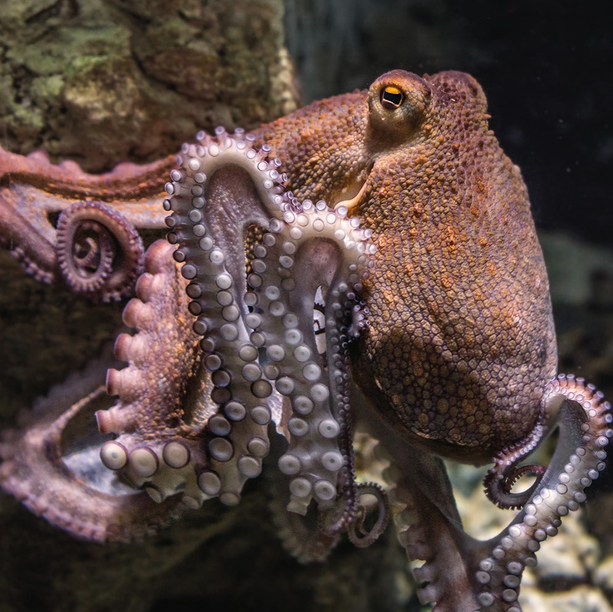

La surpêche et la dégradation de leur habitat menacent les populations
de poulpes à travers le monde. Cela perturbe non seulement les écosystèmes
marins, mais affecte aussi les chaînes alimentaires qui dépendent de ces
animaux.
La disparition des espèces marines est principalement causée par
la surpêche, la pollution des océans et le réchauffement climatique, qui
modifient les habitats marins. Ces menaces réduisent la biodiversité et
perturbent les écosystèmes, affectant la chaîne alimentaire marine. Si ces
tendances se poursuivent, l'avenir des océans et des espèces qui en dépendent
est incertain, menaçant la sécurité alimentaire et la santé des écosystèmes
mondiaux.